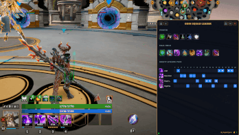
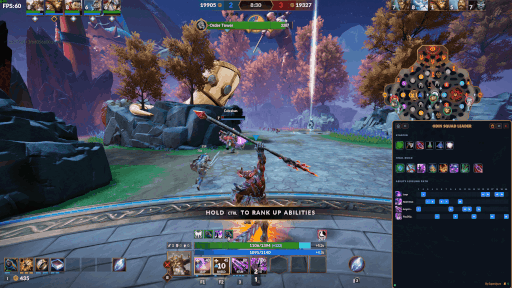
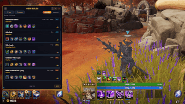
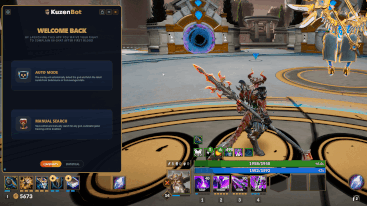
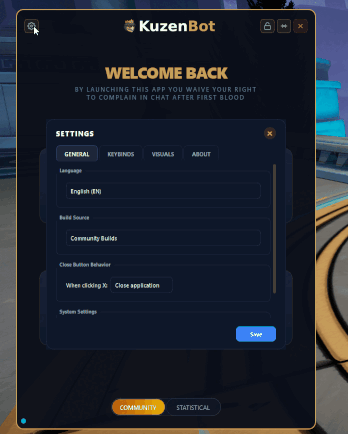
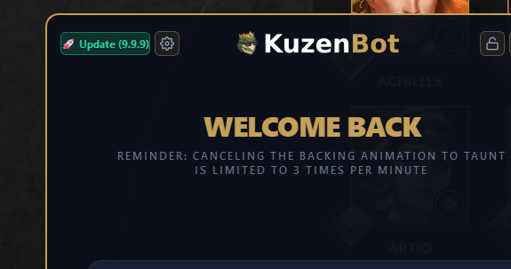

Extended i Mini – jeden skrót, dwa tryby
W bazie? Rozłóż Extended i przejrzyj pełne statsy itemów, zanim wydasz złoto. W trakcie walki? Przełącz się na Mini – mały kafelek w rogu, który nie zasłania nic ważnego. Zero rozpraszania, pełna kontrola.

Tryb AUTO – aplikacja sama wie, kogo grasz
Nie musisz wpisywać nic w pick phase. KuzenBot widzi, kogo wybierasz i od razu ładuje build dla tego boga. Zanim skończy się countdown, masz już gotową ścieżkę itemów. Zero klikania, zero guglowania.

Ghost Mode – nakładka znika dla kursora
Jeden skrót i nakładka przestaje reagować na kliknięcia – możesz klikać przez nią jakby jej nie było. Koniec z przypadkowym kliknięciem w panel zamiast rzucenia ulta. Kiedy chcesz znowu coś zmienić, jednym przyciskiem ją odblokowujesz.

Statystyczne i Społeczność – przełącz w locie
Wolisz sprawdzić co proponują budować inni użytkownicy? Ustaw Community. Wolisz twarde liczby i matematykę za itemami? Przełącz na Stats. Jeden klik i gotowe – bez wychodzenia z gry, bez zmiany żadnych ustawień.

Ustaw przezroczystość tak, żeby nie przeszkadzała
Możesz ściągnąć tło do zera i zostają tylko ikonki itemów – minimalistycznie i bez zasłaniania mapy. A możesz zostawić pełny panel. Regulujesz suwak i dopasowujesz pod siebie, zależnie od tego jak bardzo chcesz mieć nakładkę "w tle".

Motywy, hotkeye, przezroczystość – wszystko pod siebie
Wybierz motyw kolorystyczny, który Ci odpowiada, ustaw swoje własne skróty klawiszowe i dostosuj wygląd panelu do swoich przyzwyczajeń. KuzenBot ma się wpasować w Twój setup, a nie odwrotnie.

Aktualizacje same wpadają – Ty nie musisz nic robić
Po każdym patchu Smite 2 nie musisz pamiętać o sprawdzeniu nowej wersji. KuzenBot sam sprawdza, czy jest coś nowego na GitHubie, pobiera w tle i informuje Cię jednym przyciskiem. Jedno kliknięcie i jesteś na bieżąco.
